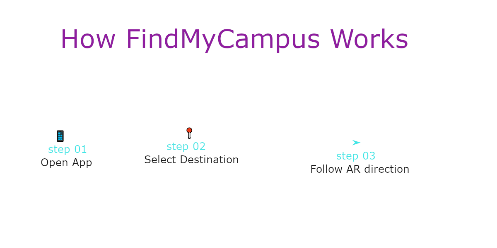

Welcome to FindMyCampus
Your AR Guide to Find Your Way Around Campus
Explore Now
Problem and Target audience
Who is our target audience?
Our target audience is new international
students at TH Aschaffenburg.
What is the problem?
New international students often face
difficulties finding classrooms,
the library,Cafeteria and other campus facilities.
Why is it important?
Finding locations in a new university
can be confusing and stressful.
Students need an easy way to navigate
the campus.
Proposed solution
What is FindMyCampus?
FindMyCampus is an augmented reality
navigation concept which designed to help new
international students explore the campus
How would it work?
Students would open the AR assistant
on their smartphones and select a
destination, such as a classroom,Cafeteria
or the library.
The proposed system would display
virtual direction arrows on the
phone screen to guide students
to their chosen location.
Our Goal
Our goal is to make campus navigation
easier, faster and less stressful
for every international students.
Frequently Asked Question
How does FindMyCampus work?
Students would open the proposed
AR assistant, select a destination,
and follow AR navigation arrows
on their smartphone screen.

Key Features
FindMyCampus offers three main features
to help new international students.
AR Navigation
Virtual arrows would appear on
the smartphone screen to guide
students to their destination.
Classroom Search
Students could search for classrooms,
the library and other campus
facilities easily.
Multilingual Support
Students could access campus
information in different languages
to understand directions better.
User Journey
Follow these three simple steps
to explore our AR navigation concept.
Step 1: Open FindMyCampus
The student opens the proposed
AR assistant on their smartphone.
Step 2: Select a Destination
The student chooses a classroom,Cafeteria,
library or another campus facility.
Step 3: Follow AR Directions
The proposed assistant displays
virtual arrows to guide the student
to their selected destination.

Limitations and Next Steps
Limitations
Our AR navigation assistant is currently
a concept and not a working application.
Indoor navigation may be difficult
because of location accuracy.
Next Steps
In the future, we would like to
create a working AR prototype.
We would also like to improve
navigation accuracy and add
more campus locations.
Finally, we would test the application
with international students and
improve it based on their feedback.
Welcome Audio
Listen to our introduction to FindMyCampus.
FindMyCampus Demo Video
Watch our website demonstration
and explore the AR navigation concept.